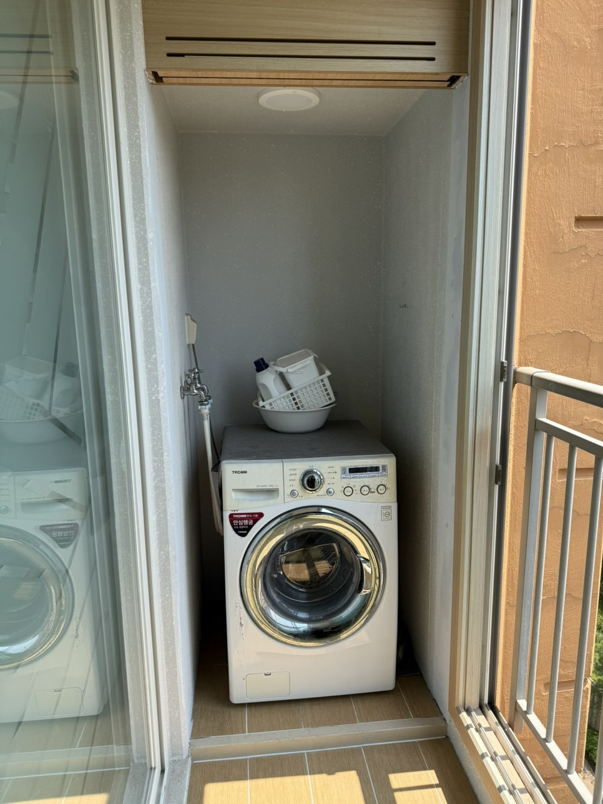
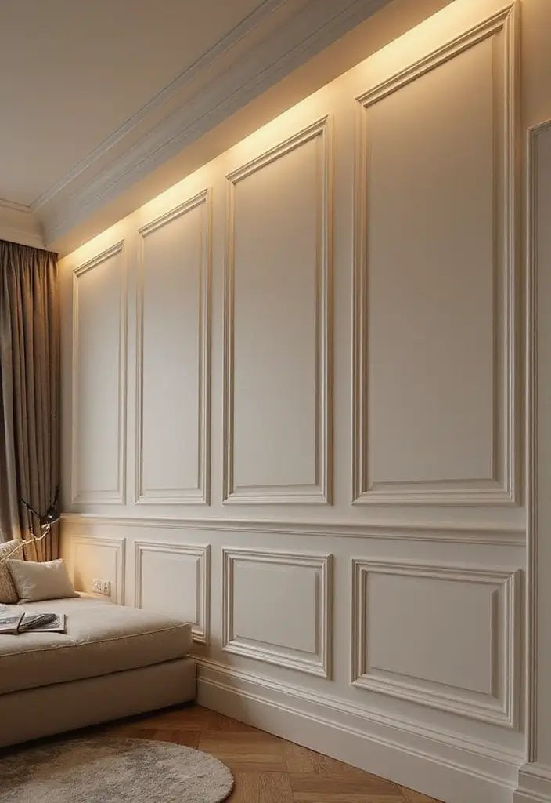
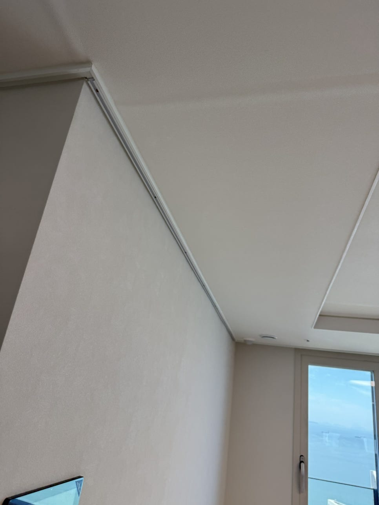
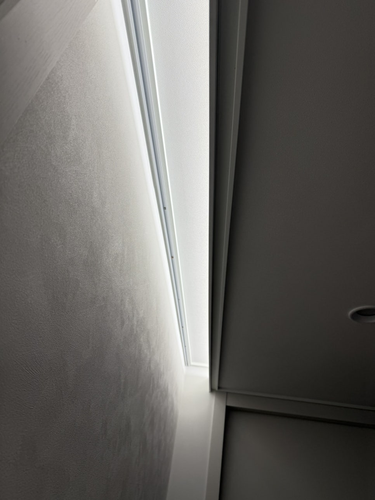
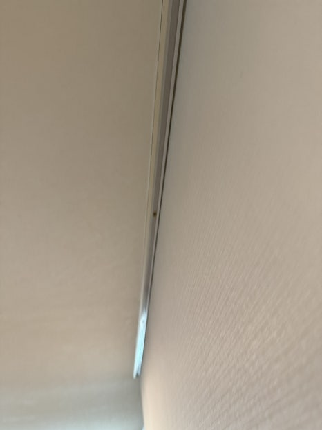
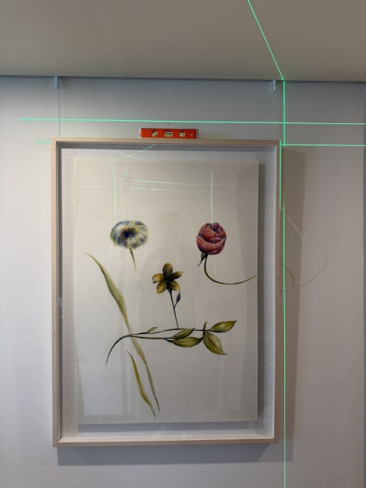
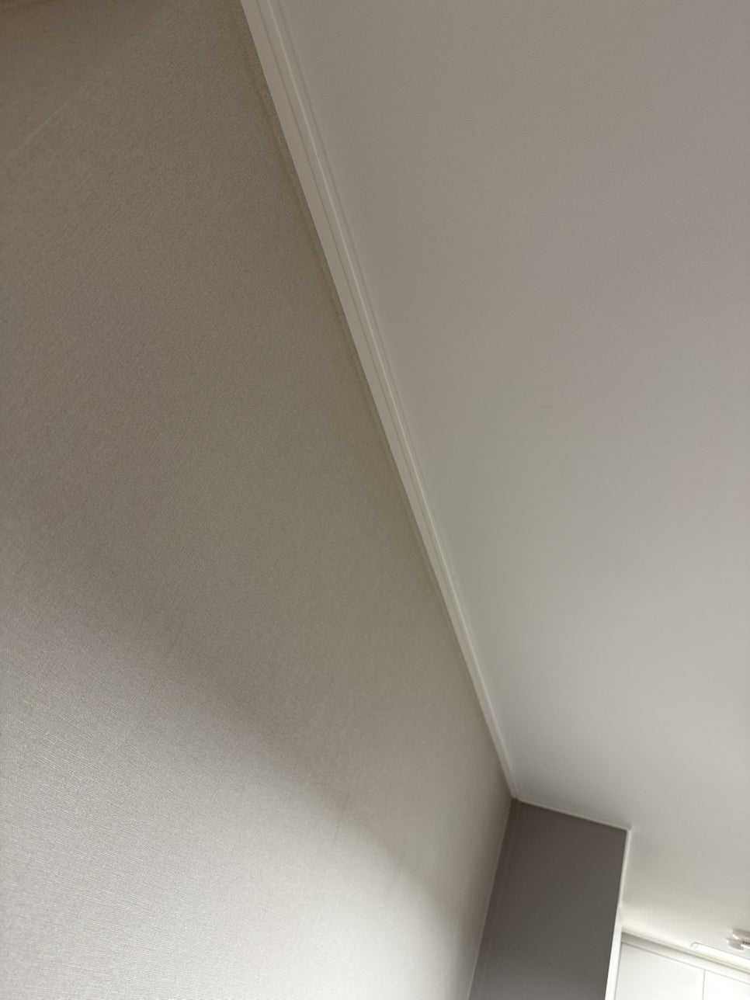
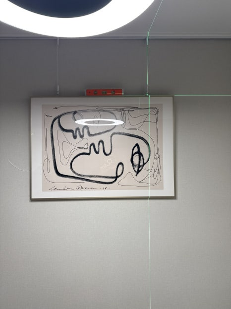
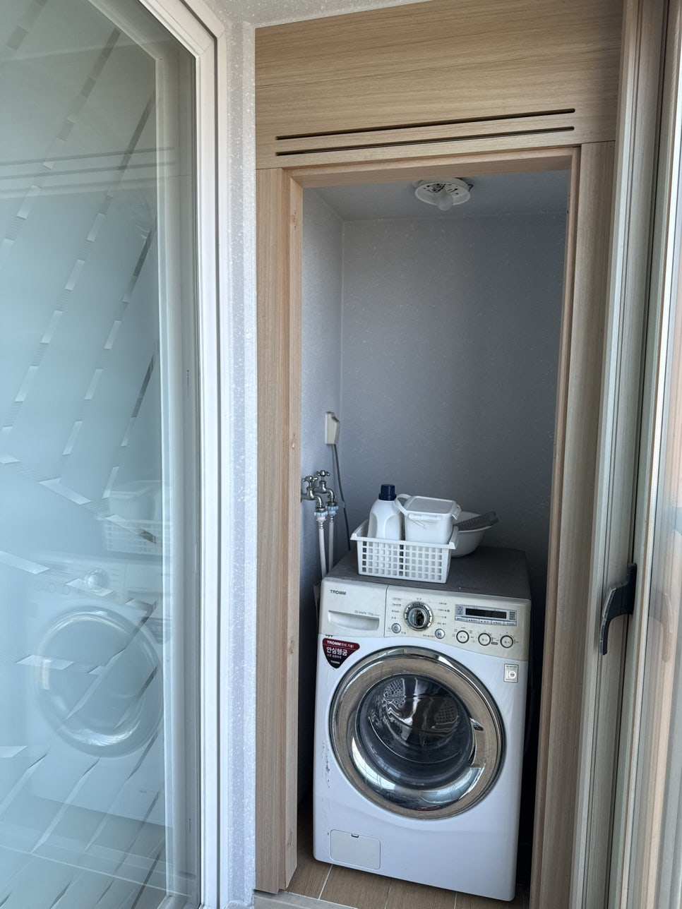

몰딩 제거·철거
낡거나 손상된 천장 몰딩, 문틀 몰딩을 깨끗하게 철거해 재시공이나 리모델링을 위한 말끔한 바탕면을 만들어 드립니다.

20년 경력 · 꼼꼼한 마감의 몰딩 제거·보수 전문팀
낡은 몰딩 철거, 문틀 몰딩 제거, 천장·마이너스 몰딩 보수, 액자레일 설치까지, 꼼꼼한 현장 실측과 섬세한 손길로 완성합니다.
무료 견적 문의몰딩 철거, 몰딩 보수, 액자레일 설치까지 전문팀이 책임집니다.

낡거나 손상된 천장 몰딩, 문틀 몰딩을 깨끗하게 철거해 재시공이나 리모델링을 위한 말끔한 바탕면을 만들어 드립니다.

들뜨거나 파손된 천장 몰딩, 마이너스 몰딩을 정밀하게 보수해 원래의 깔끔한 마감을 되살려 드립니다.

몰딩 라인을 활용해 벽에 구멍을 내지 않고도 액자·소품을 걸 수 있는 액자레일을 깔끔하게 설치해 드립니다.
실제 몰딩 제거·보수 작업 전후 비교로 확인하는 확실한 변화


천장 몰딩 레일 시공과 함께 대형 액자를 설치해 갤러리 같은 거실을 완성했습니다.


마이너스 몰딩으로 마감된 거실에 액자레일을 추가 설치해 깔끔하면서도 실용적인 공간을 완성했습니다.


낡은 문틀 몰딩을 깔끔하게 철거해 재시공을 위한 말끔한 바탕면을 완성했습니다.
상담부터 사후 관리까지, 몰딩 제거·보수 전문 업체가 체계적으로 진행합니다.
전화·온라인 상담 후 현장을 방문해 몰딩 상태와 작업 범위를 확인합니다.
제거·보수·설치 범위를 명확히 안내하고 투명한 견적을 제시합니다.
숙련된 전문팀이 몰딩 제거·보수·액자레일 설치를 정밀하게 진행합니다.
시공 후 하자 점검과 사후 관리로 마무리까지 책임집니다.
몰딩 제거·보수 전문 업체는 낡은 몰딩 철거부터 손상된 몰딩 보수, 액자레일 설치까지 현장 하나하나 꼼꼼하게 마무리하는 것을 원칙으로 합니다. 눈속임 없는 정직한 견적과 깔끔한 마감으로 신뢰를 드리겠습니다.
현장 실측 후 작업 범위를 명확히 안내하고, 숨겨진 추가 비용 없이 진행합니다.
제거·보수·설치 어떤 작업이든 마감 디테일까지 세심하게 확인합니다.
오랜 현장 경험으로 다양한 몰딩 제거·보수 사례에 정확하게 대응합니다.
몰딩 제거·보수·액자레일 설치까지 다양한 현장에서 쌓아온 경험입니다.
몰딩 제거·보수·액자레일 설치에 대해 자주 문의하시는 내용입니다.
현장 면적, 몰딩 종류(천장 몰딩·마이너스 몰딩·문틀 몰딩), 철거 후 마감 여부에 따라 비용이 달라집니다. 수원을 비롯한 경기·서울 전 지역 방문 실측 후 정확한 견적을 무료로 안내해 드립니다.
마이너스 몰딩 라인을 활용해 벽에 못이나 구멍을 내지 않고 액자·소품을 걸 수 있는 액자레일을 설치합니다. 벽면 길이와 설치 위치에 따라 비용이 달라지며, 상담 시 정확한 견적을 안내해 드립니다.
일반 가정 기준 문틀 1~2개소 철거는 반나절 내로 완료됩니다. 철거 후 벽면 마감까지 원하시면 작업 범위에 따라 시간이 추가될 수 있어, 상담 시 정확한 일정을 안내해 드립니다.
네, 들뜨거나 파손된 마이너스 몰딩, 천장 몰딩 보수 작업 가능합니다. 부분 보수부터 전체 재시공까지 현장 상태에 맞게 진행해 드립니다.
서울 전역과 경기 수원·용인·화성, 인천을 포함한 수도권 전 지역 출장 시공이 가능합니다. 정확한 방문 가능 여부는 견적 신청 시 지역을 남겨주시면 빠르게 안내해 드립니다.
현장 사진과 평수, 원하시는 시공 종류를 알려주시면 빠르게 견적을 안내해 드립니다.